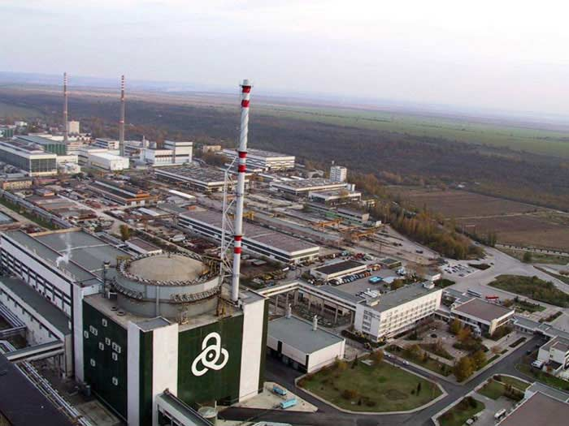
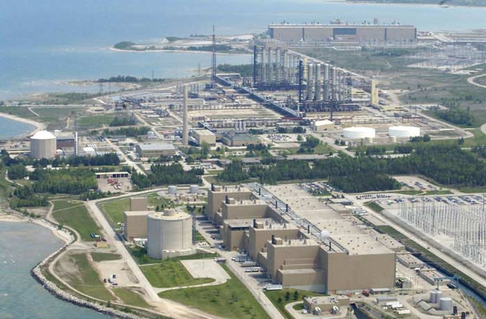
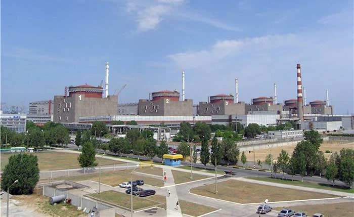
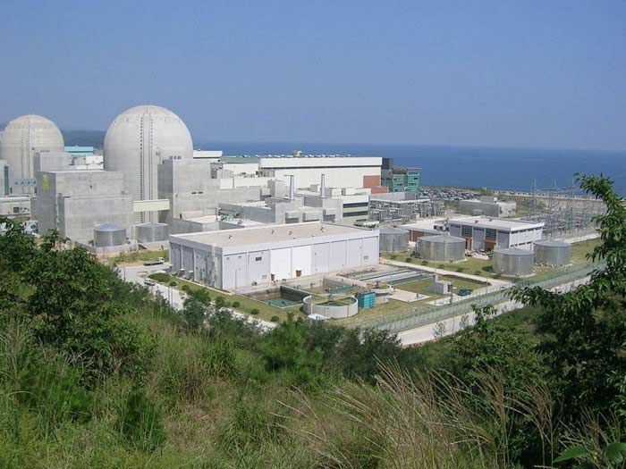
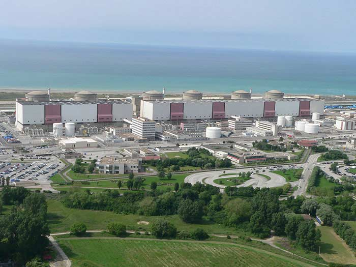

Атомна енергетика
Наш час
Станом на 2007 енергетичні ядерні реактори працювали в 31 країні світу. Найбільше ядерна енергетика розвинута в країнах з великими об'єднаними електричними мережами. Ядерна енергетика США найпотужніша у світі, 28 % від світового виробництва. Далі йдуть Франція з 18 % та Японія з 12 %. У 2007 році в світі працювало 439 ядерних реакторів із загальною потужністю 351 ГВт. За оцінками МАГАТЕ від 2008, доля ядерної енергетики залишатиметься до 2030-го в межах від 12,4 % до 14,4 % світового виробництва енергії. Станом на 2021 рік більше 30 країн виробляють електроенергію за допомогою атомних електростанцій, на які припадає 15% виробництва електрики в світі. У Франції близько 80% електроенергії виробляється атомними електростанціями. Значне зростання цін на нафту, що сталося в 2010-ті роки, змусило вкладати значні кошти в атомну енергетику. Такі країни, як США, Індія і Китай, вкладають мільярди доларів в будівництво АЕС.
Найпотужніші АЕС світу
АЕС Касівадзакі-Каріва (Японія) - 8212 МВт
АЕС Брюс (Канада) - 6232 МВт
Запорізька АЕС (Україна) - 6000 МВт
АЕС Хануль (Південна Корея) - 5900 МВт
АЕС Гравелін (Франція) - 5460 МВт
АЕС Палюэль (Франція) - 5320 МВт
Вплив на зміну клімату
Атомну енергетику нерідко пропагують як “зелену” і хочуть представити як рішення кліматичної кризи. Та як вже зазначалося, хоч атомна станція майже не викидає парникових газів під час роботи, та на усіх інших етапах своєї життєдіяльності вона теж є джерелом викидів і забруднення довкілля. За найгірших умов, викиди парникових газів від повного ядерного циклу (тобто з урахуванням усіх необхідних етапів) у 24 рази більші за викиди від сонячної енергетики та усього в 4 рази менші за вугільну.
Але це ще не все. Атомні станції – потенційно небезпечні об’єкти. Коли їх проєктують, то враховують багато ризиків, в тому числі екстремальні погодні явища. Однак середній вік станцій у світі – понад 30 років, тож і планувалися вони кілька десятиліть тому. До сучасних кліматичних умов вони просто не пристосовані. А тим часом з посиленням зміни клімату екстремальні погодні явища частішають та стають усе більш непередбачуваними та масштабними і загрожують безперебійній роботі станцій.
Особливо тривожний для атомної енергетики наслідок зміни клімату – це нестача води. За прогнозами науковців, це головний ризик для нашого регіону. Однак він не лише потенційний, а й уже помітний – наприклад, для охолодження двох блоків Хмельницької АЕС вже зараз у найспекотніші періоди доводиться брати додаткову воду з річки Горинь. Чим збираються охолоджувати ще два блоки, які Енергоатом хоче добудувати – невідомо. В оцінці впливу на довкілля цього проєкту його ініціатори немає свіжих даних про те, чи вистачить їм води для безпечної роботи «нових» блоків.
Ціна енергії
В Україні тариф на атомну електроенергію найнижчий, проте насправді він не відображає всіх витрат пов’язаних з атомною генрацією. Так, він неповною мірою включає в себе вартість зняття з експлуатації, поводження з радіоактивними відходами та не включає в себе вартість поводження з відпрацьованим ядерним паливом. Світова ж статистика показує щорічне збільшення нормованої вартості електроенергії (тобто такої яка включає всі екстерналії). За останні 11 років вартість атомної електрики зросла на 33%, про це свідчить звіт Лазард за 2020 рік. Така тенденція зумовлена постійними зростаннями вимог до безпеки, зростання вартості спорудження нових енергоблоків та виведення старих з експлуатації. Вартість сонячної та вітрової генерації в той же час впала на 90% та 70% відповідно.
З 15 наявних реакторів, у 12 вже сплив проєктний термін експлуатації – вони відпрацювали вже понад 30 років. Поки держава продовжує ці терміни, сподіваючись, що реактори-пенсіонери витримають ще трохи. Але вони все ж не вічні й рано чи пізно їх доведеться закривати. Однак закрити – не означає просто зупинитися і перестати працювати. Деякі частини атомної станції забруднені і потребують особливого поводження, тож її треба не просто вимкнути, а ще й розібрати, запакувати та захоронити відходи. Енергоатом оцінює вартість виведення з експлуатації українських енергоблоків у 300-400 млн доларів. В той час як на практиці іншим країнам це обходилося в понад мільярд. Станом на листопад 2020 Україна назбирала у Фонді зняття з експлуатації лише трохи більше 150 млн євро – і це за 17 років заощадження. До того ж, ці кошти ніяк не захищені від інфляції і ризикують ще більше знецінитися.
Зараз ми не маємо фінансів, аби вивести з експлуатації навіть один енергоблок. Тож після зупинки, старі блоки доведеться залишати на невизначений час, доки не збереться достатньо коштів. Такий відкладений демонтаж має низку недоліків. Зокрема, виведенням з експлуатації станції могла б займатися частина її ж працівників – це зберегло б їм роботу ще на багато років, а також було б значно ефективніше. Адже хто впорається з цим краще, ніж ті, хто роками там працювали і знають, як все влаштовано? Якщо ж відтерміновувати виведення з експлуатації, то люди втратять роботу, а ядерна галузь втратить можливість отримати користь від їхніх знань та навичок. Однак грошей на це немає, і замість вирішувати цю проблему, Україна планує створити нам нову – добудувати ще два реактори на Хмельницькій АЕС, на які так само немає грошей, то ще й безпечність проєкту ніким не підтверджена.
Тож, враховуючи те, чого нам коштуватиме подальший розвиток атомної енергетики – не лише грошей, а й нашої безпеки та здоров’я – варто вже зараз задуматися над альтернативами. Адже розвиток відновлюваних джерел енергії та енергоефективності вже зараз вигідніший. До того ж, саме ВДЕ нині є найчистішими технологіями, що продукують найменше відходів та забруднення і допомагають боротися зі зміною клімату.